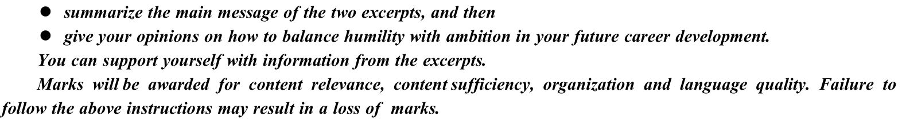
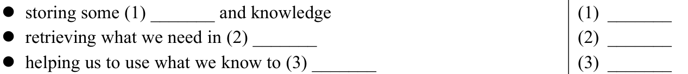
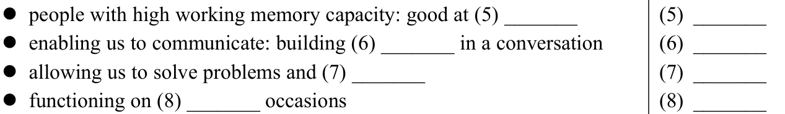
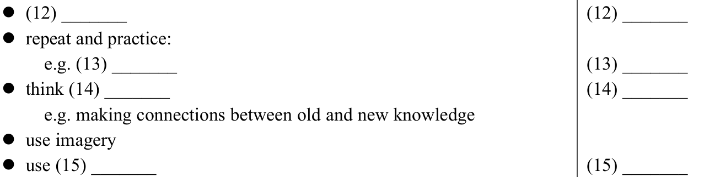

第 1 题 #
1.
点击查看答案
此题暂无可用答案。
英语专业八级 · questions · 2025
题号和章节目录由结构化数据生成。选项统一显示 A.、B.、C.、D.；原标记保留在 JSON 中。
In this section you will hear a mini-lecture. You will hear the mini-lecture ONCE ONLY. While listening to the mini-lecture, complete the gap-filling task on ANSWER SHEET ONE and write NO MORE THAN THREE WORDS for each gap. Make sure what you fill in is both grammatically and semantically acceptable. You may use the blank sheet for note-taking.
You have THIRTY seconds to preview the gap-filling task.
Now, listen to the mini-lecture. When it is over, you will be given THREE minutes to check your work.
In this section you will hear ONE interviews. The interview will be divided into TWO parts. At the end of each part, five questions will be asked about what was said. Both the interview and the questions will be read ONCE ONLY. After each question there will be a ten-second pause. During the pause, you should read the four choices of A, B, C and D, and mark the best answer to each question on ANSWER SHEET TWO.
You have THIRTY seconds to preview the choices.
Now, listen to Part One of the interview. Questions 1 to 5 are based on Part One of the interview.
1.
此题暂无可用答案。
2.
此题暂无可用答案。
3.
此题暂无可用答案。
4.
此题暂无可用答案。
Now, listen to Part Two of the interview. Questions 6 to 10 are based on Part Two of the interview.
此题暂无可用答案。
6.
此题暂无可用答案。
此题暂无可用答案。
8.
此题暂无可用答案。
9.
此题暂无可用答案。
此题暂无可用答案。
In this section there are three passages followed by fourteen multiple choice questions. For each multiple choice question, there are four suggested answers marked A, B, C and D. Choose the one that you think is the best answer and mark your answers on ANSWER SHEET TWO.
(1) A new study from researchers uncovers the kinds of infrastructure improvements that would make the biggest difference in increasing the number of electric cars on the road, a key step toward reducing greenhouse gas emissions from transportation.
(2) The researchers found that installing charging stations on residential streets, rather than just in central locations such as shopping malls, could have an outsized benefit. They also found that adding on high-speed charging stations along highways and making supplementary vehicles more easily available to people who need to travel beyond the single-charge range of their electric vehicles could greatly increase the vehicle electrification potential.
(3) The findings are reported in Nature Energy, in a paper by associate professor of energy studies Jessika Trancik, graduate student Wei Wei, etc.
(4) The researchers developed a new methodology to identify charging solutions that would conveniently fit into people’s daily activities. They used data collected from GPS tracking devices in cars, as well as survey results about people’s daily driving habits and needs, including detailed data from local areas and more general data from the country as a whole. Greatly increasing the penetration of electric cars into the personal vehicle fleet is a central feature of climate mitigation policies at local and national levels, Trancik says. A goal of this study was “to better understand how to make these plans for rapid vehicle electrification a reality,” she adds.
(5) In deciding how to prioritize different kinds of improvements in vehicle charging infrastructure, she says, “the approach that we took methodologically was to emphasize building a better understanding of people’s detailed energy consuming behavior, throughout the day and year.”
(6) To do that, “we examine how different people are moving from location to location throughout the day, and where they are stopping,” she says. “And from there we’re able to look at when and where they would be able to charge without interrupting their daily travel activities.”
(7) The team looked at both regular daily activities and the variations that occur over the course of a year. “The longitudinal view is important for capturing the different kinds of trips that a driver makes over time, so that we can determine the kinds of charging infrastructure needed to support vehicle electrification,” Wei says.
(8) While the vast majority of people’s daily driving needs can be met by the range provided by existing lower-cost electric cars, as Trancik and her colleagues have reported, there are typically a few times when people need to drive much farther. Or, they may need to make more short trips than usual in a day, with little time to stop and recharge. These “high-energy days,” as the researchers call them, when drivers are consuming more than the usual amount of energy for their transportation needs, may only happen a handful of times per year, but they can be the deciding factor in people’s decision making about whether to go electric.
(9) Even though battery technology is steadily improving and extending the maximum range of electric cars, that alone will not be enough to meet all drivers’ needs and achieve rapid emissions reductions. So, addressing the range issue through infrastructure is essential, Wei says. The highest-capacity batteries tend to be the most expensive, and are not affordable to many, he points out, so getting infrastructure right is also important from an equity perspective.
(10) “There are various ways to incentivize the expansion of such charging infrastructures,” he says. “There’s a role for policymakers at the national level, for example, for incentives to encourage private sector competition in this space, and demonstration sites for testing out, through public-private partnerships, the rapid expansion of the charging infrastructure.” Governments at different levels can also play an important part in driving innovation by businesses, he says, and a number of them have already signaled their support for vehicle electrification.
(11) Providing easy access to alternative transportation for those high-energy days could also play a role, the study found. Vehicle companies may even find it advantageous to provide or partner with convenient rental services to help drive their electric car sales.
(12) In their analysis of driving habits, for example, the team found that the impact of either adding highway fast-charging stations or increasing availability of supplementary long-range vehicles for up to four days a year meant that the number of homes that could meet their driving needs with a lower cost electric vehicle increased from 10 percent to 40 percent. This number rose to above 90 percent of households when fast-charging stations, workplace charging, overnight public charging, and up to 10 days of access to supplementary vehicles were all available. Importantly, charging options at residential locations (on or off-street) is key across all of these scenarios.
(13) The study’s findings highlight the importance of making overnight charging capabilities available to more people. While those who have their own garages or off-street parking can often already easily charge their cars at home, many people do not have that option and use public parking. “It’s really important to provide access — reliable, predictable access — to charging for people, wherever they park for longer periods of time near home, often overnight,” Trancik says.
(14) That includes locations such as hotels as well as residential neighborhoods, she says. “I think it’s so critical to emphasize these high-impact approaches, such as figuring out ways to do that on public streets, rather than haphazardly putting a charger at the grocery store or at the mall or any other public location.”
(15) The study should help to provide some guidance to policymakers at all levels who are looking for ways to facilitate the reduction of greenhouse gas emissions, since the transportation sector accounts for about a third of those emissions overall. “If you have limited funds, which you typically always do, then it’s just really important to prioritize,” Trancik says, noting that this study could indicate the areas that could provide the greatest return for those investments.
11. The team’s survey involves all the following EXCEPT ______
此题暂无可用答案。
12. During high-energy days, people tend to ______
此题暂无可用答案。
13. Highest-capacity batteries are NOT the best solution to going electric because they ______
此题暂无可用答案。
14.What does Para.10 mainly discuss?
此题暂无可用答案。
15.Which of the following is the most advisable for going electric?
此题暂无可用答案。
(1) I had been hanging around for a few years with a very party-time crowd, and my life was on a downward slide. I had gotten a Ph.D. and a divorce simultaneously. The fancy academic job never materialized. Soon I was playing flute in a street band, eating donated sandwiches, and spending every night in clubs dancing the night away. In a few years I was living in the mountains in a shack, and none of my friends worked.
(2) When I saw the ad in the Sunday paper — BRAKEMEN WANTED — I thought of it as a chance to clean up my act and to get away. I felt that by doing work this dangerous, I would have to make a decision to live, to protect myself. I would have to choose to stay alive every day, to hang on to the sides of those freight cars for dear life. The railroad transformed the metaphor of my life. Nine thousand tons moving at sixty miles an hour into the fearful night. I now would ride that image, trying to stay alive within it. I know that later, when I sat behind the moving train in the darkness of the caboose (供列车员休息的车厢), window open and the unknown fragrances of the land filling the space, the blackness of the night was my friend. It felt good to be powerless and carried along by the destiny of that motion. I felt happy and at peace. I was where I belonged.
(3) The railroad didn’t believe in lengthy formal training. They offered a two-week class which covered the book of rules, a three-hundred-page document with a dual purpose — to keep trains from running into one another and to prevent any situation in which the company might get sued. Rules of the road which you had to learn were mixed in with rules which you had to ignore in order to get the work done. But you had to know that you were ignoring a rule so that in the winter, when company officials had time to sneak around testing, you could work by the book.
(4) The rulebook was also in a continuous state of revision. Revisions appeared in the timetable which you carried with you at all times. Further revisions appeared in regular timetable bulletins which were posted at work. Soon your rulebook resembled a scrapbook, with paragraphs crossed out, pages pasted in, and notes on changes which were then crossed out and changed weeks later. It drove you crazy. You always had to be on the lookout for a company official hiding in the bushes while you did your work. This individual would pop out and ask you questions about the latest rule revisions. A notation of failure would then appear in your personal file. These notations were referred to as “Brownies,” named after the official who devised the railroad demerit system. As trainmen were fond of pointing out, however, there was no merit system to go with it.
(5) Out of seventeen student brakemen three of us were women. This was a large percentage, comparatively. The first women had been hired two years before, and they were around to give us advice. The point was to get through the class, and get over the probationary period known as the “derail.” Then you were in the union and a railroader for life. Getting over the derail took sixty days, and if either the crews you worked with or the company officers had a complaint, you were out. At the end of two weeks of classroom instruction, you bought a railroad watch, they gave you switch keys and a two-dollar lantern, and you marked up as extra board brakemen.
(6) On the last day of class, they took us down to the freightyard to grapple with the equipment. We practiced getting on and off moving cars, climbing the ladders and cranking down the handbrakes, changing the eighty-five-pound knuckles that joined the cars together, and hand and lantern signals. These signals were the way members of the crew talked to each other, and they were an art form. An old head could practically order a pizza from a half mile away. You would see lights, arcs and circles, stabs of light. It would repeat. You would stand there confused. Finally you would walk down the track and find the foreman in a deep state of disgust.
(7) “I told you to hang three cars, let two go to the runaround, one to the main, go through the crossovers, and line behind. Now can’t you read a signal, dummy?”
(8) The day after our practice session, I got into my car and tried to roll the window down. My arms didn’t work. This was my first moment of doubt about being able to do the job. It was hard to get the upper-body strength required to hang on and ride for long distances on the side of cars. Terror at falling beneath the wheels was a big motivator, however. Terror and ridicule. There was a lot of both during the probationary period and the student trips. On student trips we tagged along with a regular crew and tried to learn something. To me, what we were doing made no sense whatsoever. Just getting used to the equipment had me so disorientated that I had no idea where we had gone or how the crew did anything. One of the crew suggested to me that I go to a toy store and look at the model trains, to see how switches work. They say, though, that whatever you start out doing railroading, it gets imprinted, and that’s what you are most comfortable doing from then on. I couldn’t have picked a better place to break in than Watsonville Junction. It was old-time, local-freight, full-crew switching. Kicking cars and passing signs. The basic stuff that you have to learn at first or you never get no matter how long you’re out here.
16. Why did the author want to become a brakeman?
此题暂无可用答案。
17. According to the author, which of the following words best describes the book of rules?
此题暂无可用答案。
18. The author’s tone in the last sentence of Para. 3 is ______
此题暂无可用答案。
19. Which of the following statements is CORRECT according to Paras. 4 & 5?
此题暂无可用答案。
20. The author felt ______ on her student trips.
此题暂无可用答案。
(1) The storm came on slowly one afternoon. The clouds looked as if they were stumbling along before the wind, frightened. The sea took its cue. It started rising and falling in a manner that made my heart sink. I took in the net. Oh, you should have seen that landscape! What I had seen up till now were mere hillocks of water. These swells were truly mountains. The valleys we found ourselves in were so deep they were gloomy. Their sides were so steep the lifeboat started sliding down them, nearly surfing. The raft was getting exceptionally rough treatment, being pulled out of the water and dragged along bouncing. I deployed both sea anchors fully, at different lengths so that they would not interfere with each other.
(2) Climbing the giant swells, the boat clung to the sea anchors like a mountain climber to a rope. We would rush up until we reached a snow-white crest in a burst of light and foam and a tipping forward of the lifeboat. The view would be clear for miles around. But the mountain would shift, and the ground beneath us would start sinking in a most stomach-sickening way. In no time we would be sitting once again at the bottom of a dark valley, different from the last but the same, with thousands of tons of water hovering above us and with only our flimsy lightness to save us. The land would move once more, the sea-anchor ropes would snap to tautness, and the roller coaster would start again.
(3) The sea anchors did their job well — in fact, nearly too well. Every swell at its crest wanted to take us for a tumble, but the anchors, beyond the crest, heaved mightily and pulled us through, but at the expense of pulling the front of the boat down. The result was an explosion of foam and spray at the bow. I was soaked through and through each time.
(4) Then a swell came up that was particularly intent on taking us along. This time the bow vanished underwater. I was shocked and chilled and scared witless. I barely managed to hold on. The boat was swamped. I heard Richard Parker roar. I felt death was upon us. The only choice left to me was death by water or death by animal. I chose death by animal.
(5) While we sank down the back of the swell, I jumped onto the tarpaulin (防水布) and unrolled it towards the stern, closing in Richard Parker. If he protested, I did not hear him. Faster than a sewing machine working a piece of cloth, I hooked down the tarpaulin on both sides of the boat. We were climbing again. The boat was lurching upwards steadily. It was hard to keep my balance. The lifeboat was now covered and the tarpaulin battened (用压条固定) down, except at my end. I squeezed in between the side bench and the tarpaulin and pulled the remaining tarpaulin over my head. I did not have much space. Between bench and gunnel (船舷边缘) there was twelve inches, and the side benches were only one and a half feet wide. But I was not so foolhardy, even in the face of death, as to move onto the floor of the boat. There were four hooks left to catch. I slipped a hand through the opening and worked the rope. With each hook done, it was getting harder to get the next. I managed two. Two hooks left. The boat was rushing upwards in a smooth and unceasing motion. The incline was over thirty degrees. I could feel myself being pulled down towards the stern. Twisting my hand frantically, I succeeded in catching one more hook with the rope. It was the best I could do. This was not a job meant to be done from the inside of the lifeboat but from the outside. I pulled hard on the rope, something made easier by the fact that holding on to it was preventing me from sliding down the length of the boat. The boat swiftly passed a forty-five-degree incline.
(6) We must have been at a sixty-degree incline when we reached the summit of the swell and broke through its crest onto the other side. The smallest portion of the swell’s supply of water crashed down on us. I felt as if I were being pummelled (反复猛击) by a great fist. The lifeboat abruptly tilted forward and everything was reversed: I was now at the lower end of the lifeboat, and the water that had swamped it, with a tiger soaking in it, came my way. I did not feel the tiger — I had no precise idea of where Richard Parker was; it was pitch-black beneath the tarpaulin — but before we reached the next valley I was half-drowned.
(7) For the rest of that day and into the night, we went up and down, up and down, up and down, until terror became monotonous and was replaced by numbness and a complete giving-up. I held on to the tarpaulin rope with one hand and the edge of the bow bench with the other, while my body lay flat against the side bench. In this position — water pouring in, water pouring out — the tarpaulin beat me to a pulp, I was soaked and chilled, and I was bruised and cut by bones and turtle shells. The noise of the storm was constant, as was Richard Parker’s snarling.
(8) Sometime during the night my mind noted that the storm was over. We were bobbing on the sea in a normal way. Through a tear in the tarpaulin I glimpsed the night sky. Starry and cloudless. I undid the tarpaulin and lay on top of it.
21. In Paras. 1 & 2, the following writing techniques are used to describe the storm and the sea EXCEPT ______
此题暂无可用答案。
22. When the author said “the view would be clear for miles around” (Para. 2), the boat ______
A was at the bottom of the swells. B. was climbing up the swells.
此题暂无可用答案。
23. How did the author protect himself against the storm in Para. 5?
此题暂无可用答案。
24. We learn from Paras. 6 & 7 that the storm eventually made the author ______
此题暂无可用答案。
In this section there are eight short answer questions based on the passages in Section A. Answer each question in NO MORE THAN TEN WORDS in the space provided on ANSWER SHEET TWO.
25. What was the main purpose of the research?
此题暂无可用答案。
26. Apart from survey, what method was employed in the research (Para. 4)?
此题暂无可用答案。
27. What was the author’s life like before she became a brakeman?
此题暂无可用答案。
28. Find one sentence from Para. 2 that explains “The railroad transformed the metaphor of my life.”
此题暂无可用答案。
29. What did the author think of Watsonville Junction for a new brakeman (Para. 8)?
此题暂无可用答案。
30. What does “The sea took its cue” (Para. 1) mean?
此题暂无可用答案。
31. How did the anchors carry out their functions according to Para. 3?
此题暂无可用答案。
32. Use two words/phrases to describe the sea after the storm.
此题暂无可用答案。
The passage contains TEN errors. Each indicated line contains a maximum of ONE error. In each case, only ONE word is involved. You should proofread the passage and correct it in the following way:
For a wrong word, underline the wrong word and write the correct one in the blank provided at the end of the line. For a missing word, mark the position of the missing word with a “/\” sign and write the word you believe to be missing in the blank provided at the end of the line. For an unnecessary word, cross the unnecessary word with a slash “/” and put the word in the blank provided at the end of the line.
EXAMPLE
When /\ art museum wants a new exhibit, (1) an it never buys things in finished form and hangs (2) never them on the wall. When a natural history museum wants an exhibition, it must often build it. (3) exhibit
Proofread the given passage on ANSWER SHEET THREE as instructed.
Translate the following text from Chinese into English. Write your translation on ANSWER SHEET THREE.
民间文学包含着人民群众鲜活、丰沛的思想感情，是民族核心价值观的有力彰显。中国民间文学向来肯定正直、善良、忠厚、诚实等品质，赞颂集体主义、爱国主义以及敢于担当、敢于斗争的精神，培育着中华民族的思想观念、人文精神和道德规范。
本页部分文字层异常，已保留原图文字区域；这些区域随窗口缩放，暂不能重新换行或复制。
Read carefully the following two excerpts on humility and ambition,, and then write your response in NO LESS THAN 300 WORDS, in which you should:

Write your response on ANSWER SHEET FOUR.
Excerpt 1 What is humility associated with?
Humility is considered by many philosophers a core element of virtue, which has important benefits to the individual and society. Humility is associated with avoiding conflict, fostering reconciliation, acceptance, and peaceful coexistence. We generally perceive humility as a positive trait, and even feel naturally drawn to humble individuals.
Humility is also associated with personal happiness. Humble people generally have a great appreciation for living and for day-to-day experiences, and they are often family- and relationship-oriented. The call for humility is likely grounded in the observation that humility is associated with appreciation of life and interpersonal relationships. Living a simple life and being down-to-earth not only give you a good social life. They also help you earn the respect of other people. Humble people would avoid giving themselves praise as much as they can. Appreciation and recognition of their abilities normally come from other people. As the saying goes, respect is earned and not demanded. When people start taking notice of your good qualities without your asking for it, humility has done its job.
Excerpt 2 Humility and ambition
There has been a remarkable conflict between the call for humility and the societal value system that rewards competitiveness and prominence. General wisdom is that it’s harder to advance our career when we humbly stand back instead of promoting ourselves. Humility is frequently perceived as a weakness. Therefore, we tend to spend most of our lives working to achieve the opposite of humility — we strive for recognition. We don’t want to be like others — we want to be better. There is barely a moment in our lives when we are not confronted with some kind of yearning or need. Of course, many of these fulfill basic functions and thus are necessary to sustain life, e.g., craving to eat, drink, rest, and comfort. They may temporarily preoccupy our minds but may otherwise not represent a major distraction. Yet in excess, desire can consume our minds and may blind us to the fortune of our existence. We all know individuals who seem obsessively driven by some form of craving, e.g., wealth, beauty, and status. Their mind tells them that these things will make them feel fulfilled, and they won’t rest until they achieve their goals. In our busy lives, we usually feel there’s something we “should be” accomplishing. Many of these may be indeed necessary to support our lives, but many may not.
Can we be humble and ambitious? Yes, we can, but only if we compromise on both ends. In the end, it’s our decision — it’s up to us to choose wisely.
本页部分文字层异常，已保留原图文字区域；这些区域随窗口缩放，暂不能重新换行或复制。
ANSWER SHEET 1
Working Memory Definition
Functions of working memory

(4) _______of working memory (4) _______

(9) _______ of working memory (9) _______
(11) _______ for making use of working memory (11) _______

— structuring knowledge and experience
— giving assistance by asking questions
Conclusion Our working memory has a limited capacity, but it exerts significant impacts on us.
ANSWER SHEET 3
CULTURE
Culture is a dynamic force for change rather than a rigid set of forms or parameters that must be strictly adhered. As the World Commission on Culture (1) _______ and Development noted, a society’s culture in neither static or unchanging but (2) _______ rather is in a constant state of flux, is influencing and influenced by other (3) _______ world-views and expressive forms. The current era of globalization is taking a (4) _______ homogenizing influence on local culture. Since this phenomenon promotes the (5) _______ integration of societies and has provided millions of people with new opportunities, it may also bring with it a loss of uniqueness of local culture. This is specially true for traditional societies and communities, which are (6) _______ exposed to rapid “modernization” based on models imported from outside and not adapted to its context. (7) _______
Balancing the benefits of integrating into a globalized world against protecting the uniqueness of local culture requires the careful approach. Placing (8) _______ culture at the heart of development policies does not mean to confine and fix it in a conservative way, but in the contrary to invest in the potential of (9) _______ sustainable progress. Respect for the diversity of cultures also create the (10)_______ conditions for mutual understanding, dialogue and peace.
说明：本次考试全国出现了两套试题，其中听力、阅读、翻译和写作题目相同，仅改错题不同，现将改错题补充如下：
Language as communication
Perhaps the most fundamental reality of language learning is that language is a tool for communication. As obviously as this point may seem, its (1) implications are not always clear to students as they should be. Remember that (2) many students’ experience of English learning trains them to see English as nothing but a communication tool. The daily reality of English study for many (3) students is one of memorizing words and rules in preparation for a test and rarely involves in using English for communicative purposes. After years of this (4) kind of study, students come to see language learning as an exercise that is primarily geared to formal accuracy, specially on tests. Such non- (5) communicative approaches to English study tend to focus students’ attention on form to the exclusion of use.
The study of English is potentially more appealed when English is (6) presented as a key for establishing communication with a new world. This communication can take a variety of forms, it can mean sharing ideas face to (7) face with someone from a foreign country or gaining an access to the (8) knowledge embedded in the world’s vast library of materials published in English. In either cases, learning English means developing the ability to (9) understand and interact with a universe that is largely inaccessible for those who (10) don’t know English.